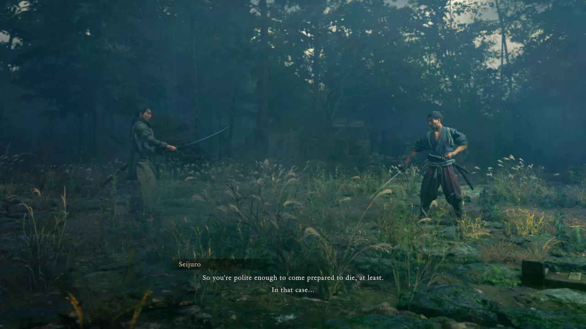
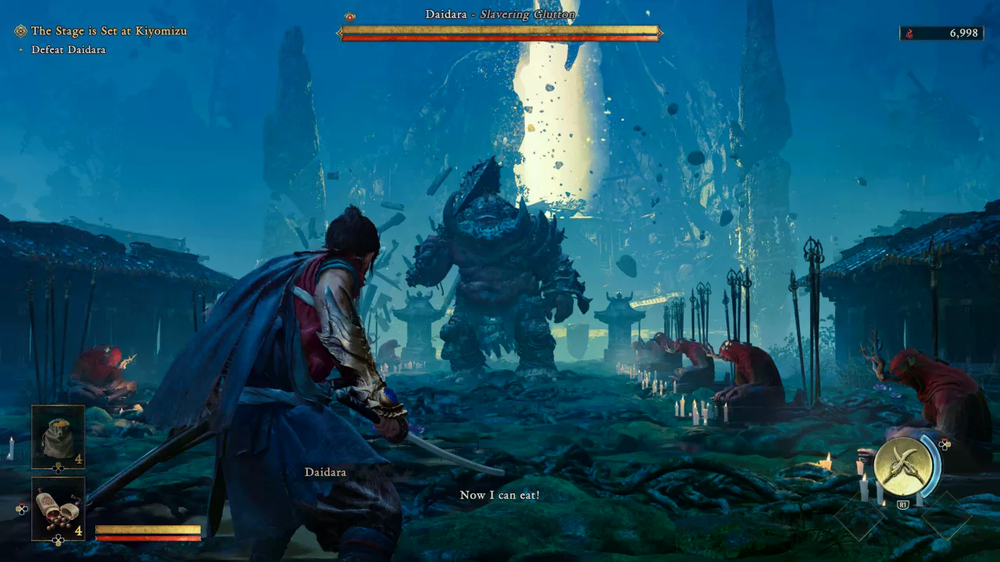
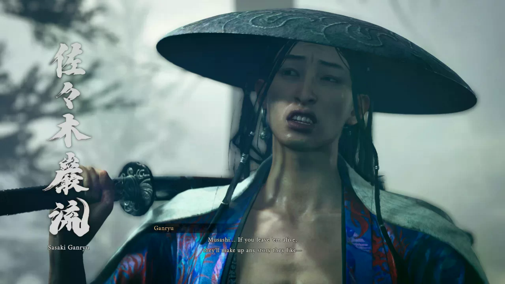
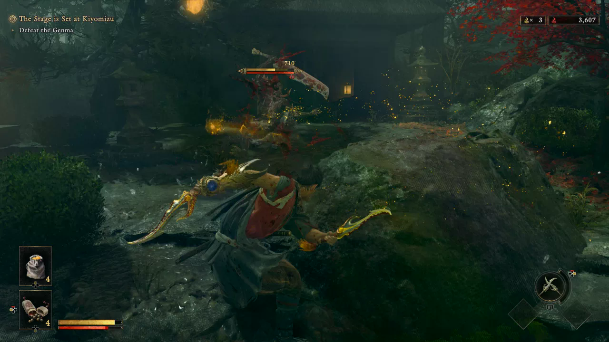
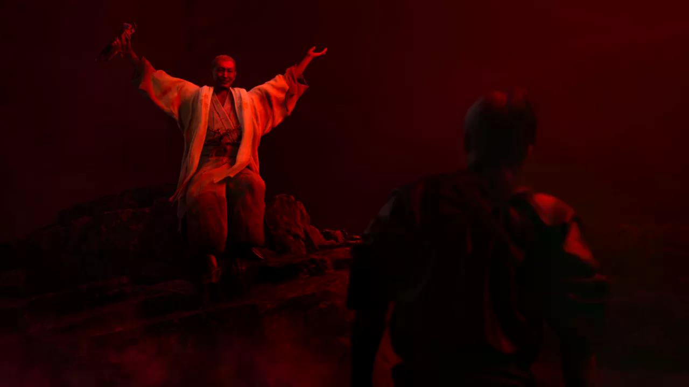
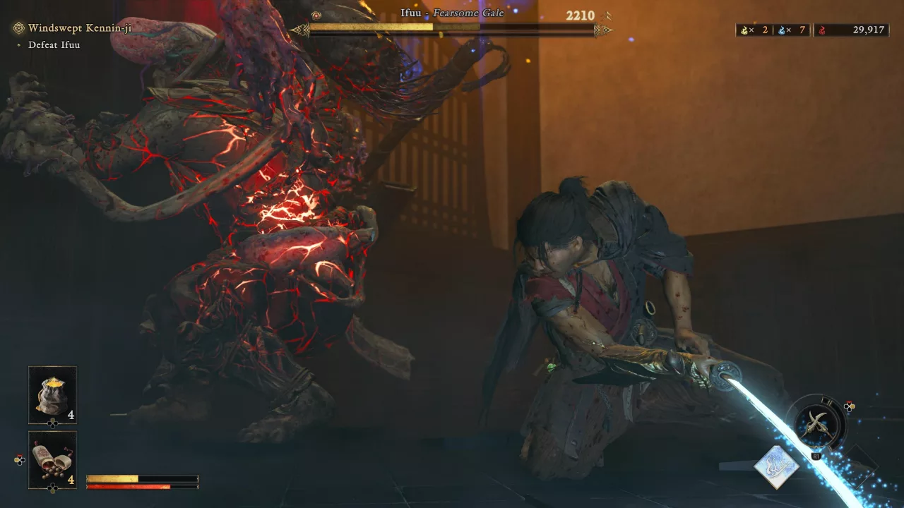

– Onimusha: Way of the Sword, 20 yıl sonra özlediğimiz samuray macerasını geri getiriyor. Capcom’un yeni oyunu beklentilerimizi karşılamayı başarabilecek mi?
Onimusha: Way of the Sword ile özlediğimiz bir marka geri dönüyor! Capcom’un samuray
aksiyon serisi Onimusha, 20 yılın ardından yeni bir oyunla evlerimize konuk oluyor.
Benim sırf kapakta Jean Reno’yu gördüğüm için (Wasabi filmi harikadır) merak edip
alarak girdiğim Onimusha serisi, ardından çıkan 4. oyun Dawn of Dreams ile uzun bir
uykuya yatmış ve iki remaster dışında hiç sesi çıkmayan bir seri haline gelmişti.
Peki Way of the Sword hem serinin hakkını verecek hem de Capcom’un uzun bir süredir
fire vermeden sürdürdüğü “iyi oyun yapıyorlar artık” serisini devam ettirebilmiş mi?
Edo döneminin erken zamanlarında, Kyoto bölgesinde geçiyor hikayemiz. Miyamoto
Musashi adındaki samuray ile dojolara gidip kılıç ustalarına meydan okuyoruz ve
adımız yenilmezlik ile birlikte anılıyor. Ama bu durum bazılarının canını o kadar
sıkıyor ki onursuz tuzaklara bile maruz kalıyoruz. Ayrıca bir rakibimiz de var,
yetenekli ama bir türlü bizi yenmeyi başaramamış Sasaki Ganryu. Son mücadelenin
ardından ikili yolculuk yaparken Genma adı verilen şeytani varlıklar tarafından
tuzağa düşürülüyorlar. Zorla Musashi’nin koluna takılan bir eldiven karakterimize
genma ruhlarını emme ve bu sayede daha fazla güç kazanma fırsatı sunuyor. Musashi
“bu bize ters” falan dese de eldiveni çıkaramadığı için daha fazla bilgi edinmek
adına eldivenden gelen sesi dinleyip Kyoto’da bu işten anlayan birini bulmak üzere
yola koyuluyor.

Oyun ciddi bir ton ile başlayıp daha ilk dakikada aklınızı karıştıracak bir havaya bürünüyor. Karakterler hem ciddi hem de ot gibi bir role bağlı kalmayarak sonunda insan olduklarını belli edecek kadar iyi yazılmışlar. Espriler ii, olaylar ilgi çekici ve arka planda bize sunulan dünya çok güzel. Aslında oyunu oynarken tam bir Jackie Chan filmi havası aldım. Ben Jackie Chan filmlerine bayıldığım için bunu koca bir artı olarak yazıyorum. Yine de hikayenin hep şakalarla geçmesini beklemeyin, bir noktada “Evet güldük eğlendik, şimdi biraz ciddiyet” diyerek öyle dönüşler yapıyor ki ağzınız açık kalıyor. Ben hikayenin ayarını dozunda buldum, su gibi akıyor. Yan görevler de fena sayılmaz. Daha önce temizlediğiniz mekanlara gidip ufak tefek getir - götür, düşman temizle görevleri de yapıyorsunuz ama özellikle Murasaki karakterinin takip ettiği hikaye alakasız şeylerden başlayıp güzel bir şekilde konuyu bağlıyor. Ben sırf Murasaki’yi görmek için bile takip ederdim gerçi görevleri. Bir de ana hikayede karşılaşıp gerisini öğrenmek için dönebileceğiniz bir dilek tapınağı var. Orayı kaçırmayın.
"Yaşamak acı çekmektir. Bu, Buda'nın bir öğretisidir. Bunun anlamı, hayatın senin keyfine göre şekillenmeyeceğidir. Ne kadar çabalarsan çaba, işler hep böyle yürür. Tek yapabileceğin, bu zorluğu (mücadeleyi) sevmeyi öğrenmektir." — Ono no Takamura
Hikaye ilk 4 oyundan bağımsız, karakterler yeni ve eski oyunları oynamamış olsanız bile keyif alacağınız şekilde tasarlanmış. Yine de bu oyunu beğendiyseniz remaster olarak çıkmış ilk iki oyunu ve diğer iki oyunu da oynamanızı öneririm. Onlar da benzer tarzda oyunlar ve yeni nesil oyunların aksine bıkmadan takip edebileceğiniz güzel içeriklere sahipler.

Oyunun hikayesini beğendik, şimdi de oynanış kısmına bakalım. Üçüncü şahıs görüşünden oynadığımız oyunda yalnızca kılıçlarımız ve çeşitli mekanlarda bulduğumuz Oni silahlarını kullanarak dövüşüyoruz. Katana ile saldırı yapmanın yanı sıra savunma (block), savuşturma (parry), geri sektirme (deflect) ve kaçınma (dodge) yaparak ekstra saldırı seçeneklerine erişebiliyoruz. E bunların hepsi defansif sistemler, nasıl saldırıya dönüştürüyoruz derseniz, savuşturma kısmını zaten tahmin etmişsinizdir, düşmanı sendeletip kılıcı oni ruhuyla güçlendirerek tepelemek üzerine kurulu. Geri sektirme düşmanın dayanıklılığını düşürüp kritik hasar vermemizi sağlıyor ve menzilli saldırıları sahibine iade ediyor. Kaçınma ise farklı bir oni gücünü dolduruyor ve bir süre sonra gölge gibi düşmanlar arasına atlayarak yüksek hasarlar verebilir hale geliyoruz. Düşman ile kılıç çarpıştırıp doğru saldırıyı yaparak açık vermesini sağlayabildiğimiz bir seçenek de var. Bunların hepsi Issen türleri olarak geçiyor ve normal düşmanlarda anında öldürecek kadar güçlüler.
Genma türleri etrafta bolca var ve hepsinden farklı renkte ruhlar çıkabiliyor. Kırmızı en genel olanı ve eldivenimiz için para birimi gibi bir şey. Mavi özel Oni silahlarını kullanmamızı sağlıyor, sarı ise eksilen canımızı tazelemenin bir yolu. Dövüş esnasında eldiveni kaldırıp bu ruhları toplamazsanız sizi havada bekliyorlar. Ama sorun şu ki bu ruhları düşmanlar da emebiliyor ve ona göre size karşı ekstra güçlenmiş olarak geliyorlar. Başlangıçta dövüşü bırakıp ruhları toplamaya uğraşıyorsunuz ama oyun ilerledikçe dövüş esnasında toplamaya yarayan özellikler de açılabilir hale geliyor. Bizim karakterimiz bir Onimusha, yani Oni Savaşçısı ve eldivenindeki yol arkadaşı ile birlikte güçlendikçe ekstra güçlere ve özel silahlara erişebiliyor. Daha güçlü kollar sayesinde engelleri kaldırıyor, daha güçlü bacaklar ile duvarlardan koşuyor gibi. Ayrıca kollar sayesinde savunmaya geçen düşmanların da ağzını kırabiliyoruz. Oni silahları dediğimiz şey ise gücünü paylaştığımız Oni ırkı tarafından yapılmış olan özel silahlar. Başlangıçta bir çift bıçak var ama ilerledikçe mızraklar, ateş kuşları ve çekiçler gibi farklı silahları da bulup kullanabiliyoruz. Benim favorim yüksek stamina hasarı sebebiyle çekiçler oldu ama şarj olurken çok açık veriyor.

Oyunun savaş sistemini çok beğendim. Rakiplerin saldırılarını farklı şekillerde durdurup karşı saldırılar yapmak, kalabalık grupların arasına dalıp talan etmek, Oni silahları ile ortalığı karıştırmak ve bir yandan “ulan ruhu benden önce kapmasın patlayacak” diye paniklemek çok eğlenceli. Siz basit düşmanları kesip biçerken bir anda deflect atan bir samuray kalıntısı olaya dahil oluyor, bir de havadan ruh çekerse ekstra güçleniyor ve dengeler bir anda aleyhinize dönüyor. Çevrede bulunan varilleri, kapıları falan düşmana atıp hasar verebiliyorsunuz, kendi sütunlarıyla düşmanı dövebiliyorsunuz, bunlar hep dövüşe eğlence katıyor.

O sekanstan sonra hızlıca Captain Price’a geçtik ve hikaye soluksuz bir aksiyonla
başladı. Neler neler yaşandı anlatamam. Çünkü her dediklerim bir spoiler etkisi
yaratabilecek seviyede. Oyun yüksek bir tempoda aksiyonun içine sürüklüyor sizi.
Belli başlı yerlerde buna ara verilse ve gizlilik öğeleri araya girse de, bu tempo
da oyun sonuna kadar durmuyor.
Kuzey Kore'nin Güney Kore'yi işgali ve Kaptan Price'ın kanunların dışında yürüttüğü
kişisel savaşı olduğu için onu tamamen kaçak durumuna itiyor. Ayrıca bu durum Task
Force 141'in geleceğini de doğrudan etkiliyor.
Boss savaşları ise bambaşka bir durum. Normal düşmanlar ne kadar eğlenceli olursa
olsun bir noktaya kadar götürüyor, zaten Genma çeşitleri de çok fazla olmadığından
sıkılabiliyorsunuz. Ama bosslarda durum başka, her biri kendine has saldırılara
sahip olan, üst zorlukta (normal) sizi saniyelik kararlar verdirmeye itecek kadar
riskli saldırılar yapan hayvanlar (mecazen ve bazen gerçekten) var karşımızda.
Dövüşürken bir yandan “stamina bitince direkt kafaya mı girsem ama kalan canı benim
sağlık eşyalarımla dayanabileceğim seviye de mi olacak” diye düşünüyor, bir yandan
da Dualsense’in yukarı dpad tuşuna basıp kendinizi iyileştirmeye çalışıyorsunuz.
DualSense özellik olarak çok güzel şeyler sunuyor ama bu tür oyunlarda karakteri mi
yürütücem eşya mı kullanıcam derken el krampları geçirtiyor bana.



Yorum Yap